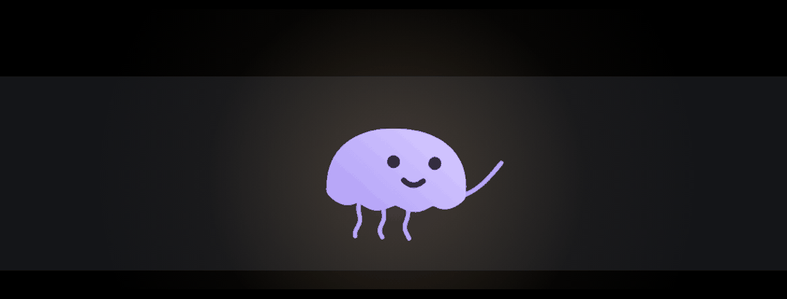

Your characters, living in the notch
Lumo watches your Claude Code sessions, lets you approve them from the notch, chats and codes with your Claude Code subscription, and keeps WhaTicket, GitHub, Gmail and more at hand. Free and open source, on macOS, Windows and Linux.
DownloadView on GitHub

Private by design. No account, no analytics, no tracking. Your keys stay in your Keychain, Windows Credential Manager or the Linux Secret Service.
Read the privacy policy.
Requires macOS 15 or later, Windows 10/11, or Linux (X11 or Wayland). Builds aren’t signed yet: the first launch asks you to confirm.